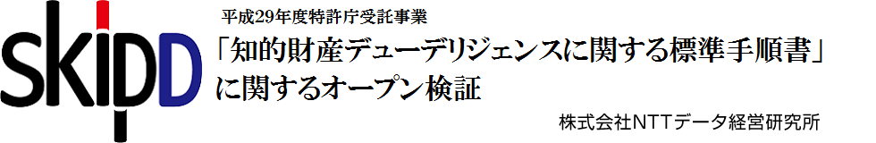
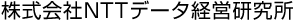

<!doctype html>
<html lang="ja">
<head>
	<meta name="viewport" content="width=device-width,initial-scale=1">
	<meta charset="UTF-8">
 	<title>特許庁平成29年度受託調査</title>
 	<meta name="description" content="The HTML5 Herald">
 	<meta name="NTTデータ経営研究所" content="SitePoint">
 	<link rel="stylesheet" href="./style.css">
  </head>

<body>
<div class="header">
<h1><a href="./index.html"></a></h1>
	</div>

	<!-- 全体 -->
	<div class="wrapper">
	<!-- main -->
	<div class="main">

<h2>３　セミナー情報</h2>
<h3>日時　２０１８年１月１６日　東京　16:00～18:00</h3>
<h4>会場　クリエイト紀尾井町　６階会議室</h4>
<p>受講料　無料</p>
<p>定員：20名(定員に達し次第、受付終了とさせて頂きます）</p>
<h4>スケジュール</h4>
<ul>
	<li>16：00－16：05　開会</li>
	<li>16：05－16：15　本事業の趣旨説明（特許庁 法制専門官 足立昌聰）</li>
	<li>16：15－16：55　セミナー①M&A取引の手順16：55－17：25　セミナー<br>
	②M&Aにおける知財関連リスク事例解説</li>
	<li>17：25－17：35　セミナー③知財DD標準手順書の活用</li>
	<li>17：35－17：40　セミナー④文書共同編集へのGitHub導入</li>
	<li>17：40－17：55　質疑応答</li>
	<li>17：55－18：00　閉会</li>
	</ul>
<p>ご対象者：経営企画部、知的財産部などM&A等に関わってらっしゃる方、又はM&A等にご興味のある方など</p>


	</div>
	<!-- mainここまで -->

<div class="side">
		<h2>目次</h2>
		<ul>
			<li><a href="./index.html">当事業について</a></li>
			<li><a href="./github.html">GitHubの使い方</a></li>
			<li><a href="./seminar.html">セミナー情報</a></li>
		</ul>

	<!-- 著者紹介 -->
	<div class="author">
		<h2>事務局</h2>
		<p></p>
		<p></p>
		<p>【問合せ先】</p>
		<p>「知的財産デューデリジェンスの実態に関する調査研究(SKIPDD)」事務局</p>
		<p>（委託先：NTTデータ経営研究所）</p> 
		<p>メールアドレス： skip@keieiken.co.jp</p>
	</div>
	</div>

</div>
<!-- 全体ここまで -->

<!-- フッター開始 -->
<div class="footer">
	<p>Copyright c 2017-2018</p>
	<p>NTTデータ経営研究所 All Rights Reserved.</p>
	<p><a href="www.keieiken.co.jp">www.keieiken.co.jp</a></p>
</div>
<!-- フッター終了 -->

</body>
</html>
